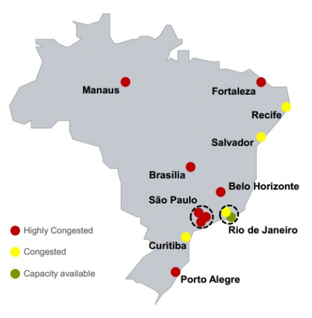
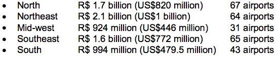

Currently, passengers face long waiting lines at terminals, and airlines often have their requests for additional slots (especially during peak hours) denied. Airport equipment such as kiosks, navigation systems, luggage sorting systems, conveyor belts, inspection devices, signage and sanitary facilities are all in need of modernization. The following map shows the main airports in Brazil and their current level of passenger capacity:

Non-Commercial Revenues
At Brazilian airports, commercial activity at the departure gates is usually limited to small snack shops and/or Duty Free shops. This pattern prompts many passengers to spend time landside, where shopping and restaurant choices are broader; and then rush through security at the last minute, elevating the risk of flight delays for the airlines.
In 2011, non-aeronautical income for airport operators in Brazil amounted to R$570 Million (US$245 million), or 32% of total revenue. There clearly remains potential to be explored, especially in retail operations within departure areas. Specialists believe that retail revenues at the most important airports in Brazil could easily increase to 40%, closer to the global average share of non-aeronautical revenue for airport operators.
Regional Airports
In December 2012, the GOB launched the Logistics Investment Program, a three-part program with specific actions for the airports sector, structured as follows:
Concession of major international airports – São Paulo Guarulhos, Rio de Janeiro Galeão, Belo Horizonte Confins, Brasília and Viracopos. Currently underway; more expected starting in 2015.
Investments in 270 regional airports around the country through a new Regional Aviation Plan. The goal is to restructure Brazil's regional aviation network, thereby expanding air cargo transport supply and improving the quality of airport services for Brazilians residing outside of the large cities.
Commercial exploration of private airports dedicated exclusively to general aviation.
As to the second point above, to strengthen and expand the network of regional airports the GOB is investing US$3.6 billion in the first stage of the Regional Aviation Plan, analyzing 270 regional (of 689 total) airports and heliports. By the end of the program, the government intends for 96% of the Brazilian population to be located less than 100 kilometers away from an airport. Resources will come from the National Civil Aviation Fund (Fnac), with project and investment management by Banco do Brasil. These will be dispersed as follows, by region of country:

The project will promote the improvement, modernization, reform and expansion of airport infrastructure, both in physical facilities and in equipment; such as repair and construction of ramps and runways, and upgrades in terminals.
Airport Concessions
In February 2012, an auction was held wherein 11 consortia formed by 28 national and foreign companies participated. Three separate consortia won concessions to operate and upgrade the following airports:
São Paulo-Guarulhos International Airport: with a bid of R$16.2 billion (US$7 billion), a 20-year concession was granted to Consórcio Invepar ACSA, comprising Brazilian company Invepar (90% interest, set up by pension funds Previ, Funcef and Petros), Brazilian construction company OAS, and South Africa Airport operator (ACSA, with a 10% stake).
Campinas-Viracopos International Airport: with a bid of R$3.83 billion (US$1.65 billion), a 30-year concession was awarded to Consórcio Aeroportos Brasil, which includes Triunfo Participações (45%), UTC Participações (45%) and France's Egis Avia (10%).
Brasília-Presidente Juscelino Kubitschek International Airport: with a bid of R$4.51 billion (US$1.94 billion), a 25-year concession was awarded to Inframérica Aeroportos, established by Brazilian organization Infravix (50%) and by Argentina’s Corporación America (50%).
The new private operator teams will consist of consortia between a large Brazilian construction and engineering firm, a foreign airport operator, and Infraero. Infraero, as the GOB entity, retains a participation of 49% interest in each of the three airports. Altogether, these three airports comprise 30% of all civil aviation traffic, 65% of all international passengers, and 57% of all air cargo traffic in Brazil.
In December 2012, the GOB approved international airport concessions for Galeão International Airport in Rio de Janeiro (the country's second largest airport) and Tancredo Neves/Confins International Airport in Belo Horizonte, Minas Gerais). The winners of the concessions were announced in late 2013, as follows:
Rio de Janeiro-Antônio Carlos Jobim “Galeão” International Airport: with a bid of R$19 billion (US$8.18 billion), a 25-year concession was granted to Consórcio Aeroportos do Futuro, comprised of Brazilian construction engineering firm Odebrecht and the operators of Singapore’s Changi International Airport.
Belo Horizonte-Confins “Tancredo Neves” International Airport: with a bid of R$1.82 billion (US$78 million), a 30-year concession was granted to Consórcio AeroBrasil, comprised of Brazilian construction engineering firm CCR, Swiss airport operator Flughafen Zurich, and German airport operator Flughafen Munchen.
The U.S. Commercial Service is currently introducing U.S. suppliers of airport equipment and services to a number of these new airport concession winners.
Secondary airports operated by states and cities can be privatized without need to refer to any federal law, regulation or policy. For example, airports in the States of Bahia, São Paulo and Rio Grande do Sul have already been commercialized through private concessions.
Infraero plans major investments to increase the capacity of the 63 airports that remain under its administration. Infraero has also announced that security improvements, like modern X-ray machines for baggage screening, metal and explosives detectors, surveillance cameras, as well as fire-fighting and rescue vehicles will be acquired through public tenders, at a total cost of US$200 million.
U.S. TDA Role in Brazilian Airport Modernization
The United States Trade and Development Agency (USTDA) provides grants to assist Brazilian officials in early investment analysis, training, orientation visits, and business workshops supporting the development of a modern infrastructure; and a fair and open trading environment in the airport industry. These studies are funded with the primary aim of creating additional market opportunities for U.S. companies. The following list of USTDA projects illustrates the in-depth potential of business opportunities in Brazil’s airport industry:
Orientation Visit for Infraero Airport Officials: USTDA funded this group visit to the U.S. for ten airport officials from Infraero to present upcoming procurements related to Infraero’s airport modernization, and expansion projects and investments in security systems.
Cargo Airport Study in Ceará: USTDA awarded a US$480,000 grant to the Ceará State Government to determine technical and financial viability of the construction of a new cargo airport in the state. The study will create an implementation plan for a new facility that will increase the efficiency of air cargo transport in this Northeast state.
Rio Grande do Sul Airports Technical Assistance Project: USTDA provided a US$630,000 grant to the Rio Grande do Sul State Secretariat for Infrastructure and Logistics (SEINFRA) to fund an aviation modernization plan that will support the expansion of aviation transportation services throughout the State.
Confins Master Plan Update: USTDA provided US$573,000 for a technical assistance grant to the Economic Development Secretariat of the State of Minas Gerais to update a Master Plan for the Tancredo Neves International Airport.
Integrated Air Transportation Network Expansion Plan: USTDA is providing a US$240,900 technical assistance grant to the Transport and Public Works Secretariat (SETOP) to develop a system plan for an integrated air transportation network serving the State of Minas Gerais.
Strategic Airport Development Study: In 2013, USDTA provided a grant to the Rio de Janeiro State Government to develop a regional airport and heliport strategic analysis.